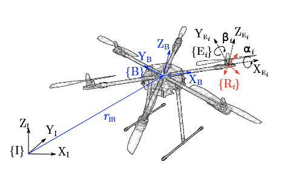

Modeling and Sliding Mode Control of a Fully-actuated Multirotor with Tilted Propellers

Venue. IFAC-PapersOnLine (2018)
Materials.
DOI
PDF [link]
Abstract. This paper presents modeling and control of a fully-actuated hexarotor. With tilted propellers, the full pose of the unmanned aerial vehicle (UAV) can be controlled independently, and the vehicle is able to exert full wrench on the environment for aerial manipulation tasks. Based on modeling of the propeller aerodynamics, the vehicle dynamics and the brushless DC-Motors, a robust integral sliding mode control including chattering avoidance is proposed. A detailed performance analysis of the integral sliding mode control is presented and compared with PID control with exact feedback linearization using numerical simulations. The performance assessment of step response, disturbance response and trajectory tracking has shown, that the proposed controller demonstrates robustness for a fully-actuated hexarotor with tilted propellers under realistic operational conditions with noisy state estimation and tolerating parameter uncertainties.
Link to this page: